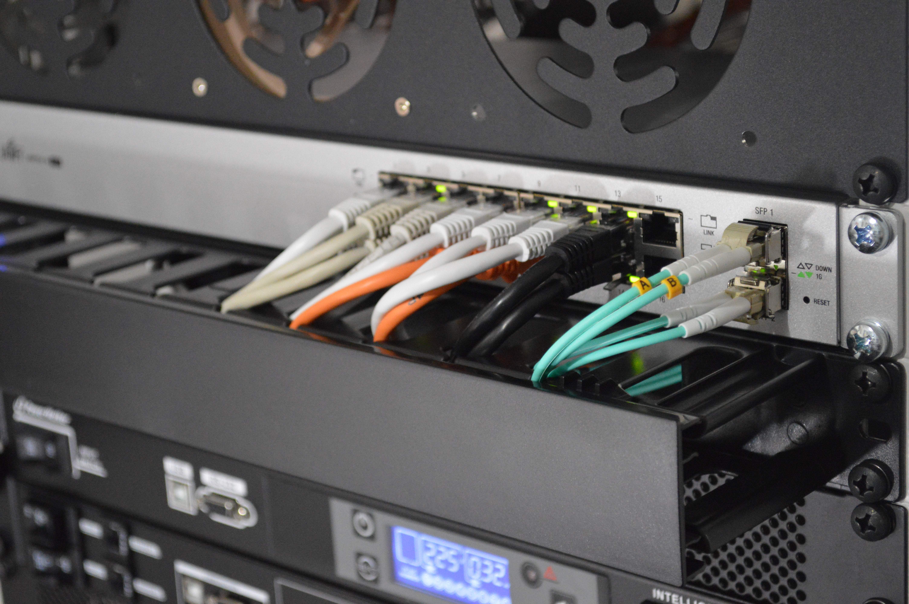

Redes Seccion 2 Grupo 5


Somos un equipo se ingenieros de sistemas comprometidos y enfocados en sacar adelante cualquier reto que se nos ponga.

Maria Alejandra Escante
201631008
ma.escalante@uniandes.edu.co
"Me gustan los memes, series y peliculas."

Juan Camilo Castiblanco
201630025
jc.castiblancor@uniandes.edu.co
"Me gustan los memes, series y juegos."
